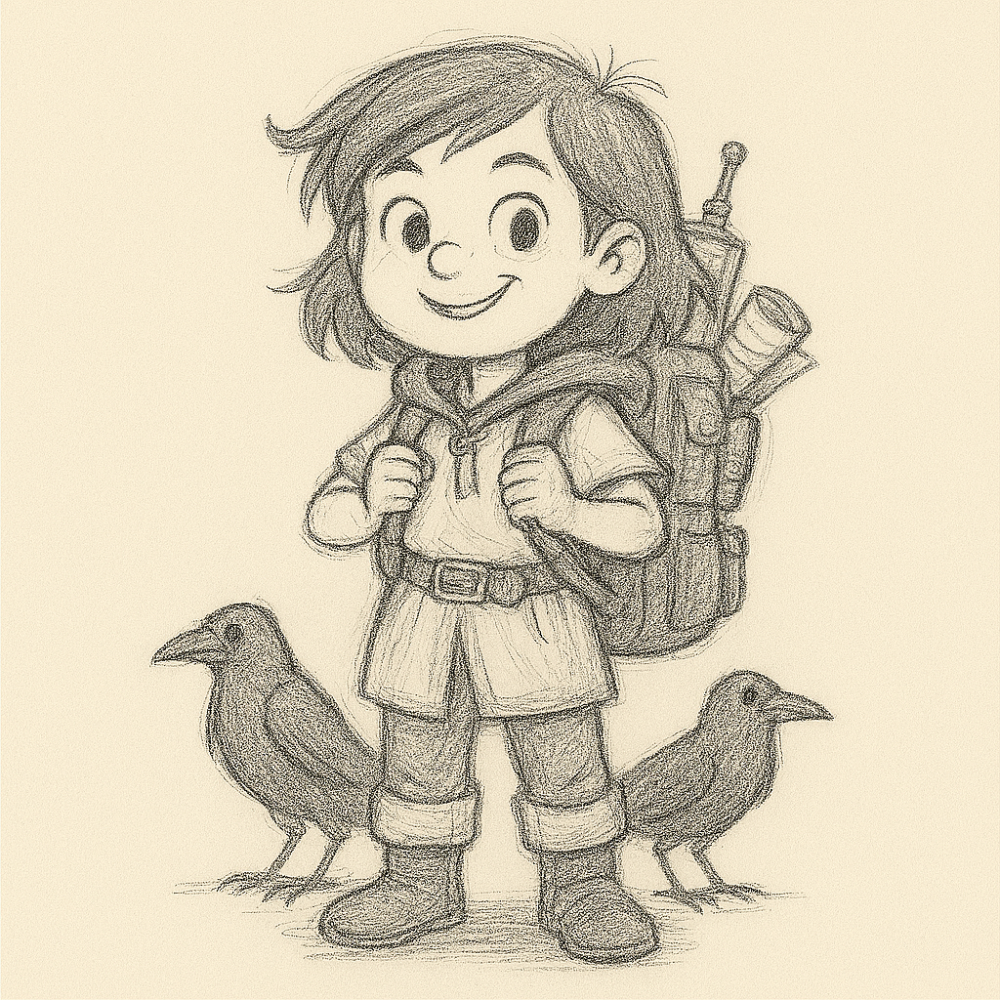
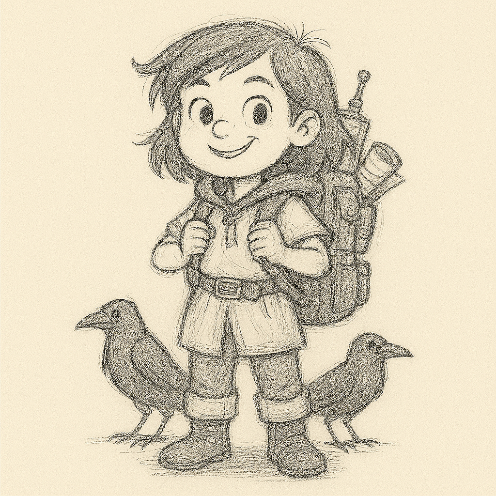

Story
Once upon a time, in a forest full of talking trees and giggling squirrels, three kids met at the edge of Eldhollow Woods.
Liora was a brave girl who used to live in a big castle. She wore shiny boots and always had a tiny dagger tucked in her sock—just in case. She was looking for her big brother, who had gone missing after chasing a mysterious light into the woods.
Bran was a quiet boy who lived in a cozy treehouse with a bunch of animal friends. He had a special secret: every time he told a fib, a little black raven popped out of nowhere and followed him around, squawking loudly. So Bran tried very hard to always tell the truth.
Tess was the youngest, and she loved inventing things. Her backpack was stuffed with blinking gadgets, spinning gears, and a robot duck named Quackers. Tess didn’t believe in magic—she thought it was just science wearing a silly hat.
One sunny morning, the three of them heard a story about a magical mirror deep in Eldhollow. It didn’t show your face—it showed who you really were inside. Liora wanted to find her brother. Bran wanted to stop the ravens. Tess wanted to prove the mirror was just a fancy trick.
So off they went, skipping past mushroom villages and hopping over sleepy trolls. The forest was full of puzzles: trees that asked riddles, rivers that sang lullabies, and butterflies that whispered secrets.
When they finally found the mirror, it didn’t show what they expected. It showed Liora’s kindness, Bran’s courage, and Tess’s big heart. They all smiled—and even Quackers gave a happy beep.
They didn’t find treasure or magic spells. But they found something better: friendship, truth, and a little bit of wonder.
And from that day on, Eldhollow wasn’t just a forest—it was their forest.
Characters
- Liora
- Age: 12
- Role: The Brave Noble
- Personality: Bold, clever, and fiercely loyal
- Backstory: Liora grew up in a grand castle, surrounded by rules and royal expectations. But when her older brother vanished into Eldhollow Forest chasing a mysterious light, Liora broke every rule to find him. She’s quick with words, quicker with her dagger, and never backs down from a challenge.
- Skills:
- Excellent at solving riddles and puzzles
- Skilled in stealth and navigating tricky terrain
- Can charm or outwit almost anyone
- Fun Fact: She keeps a tiny map stitched into the lining of her cloak—just in case she gets lost.
- Bran
- Age:13
- Role:The Quiet Woodsman
- Personality:Thoughtful, gentle, and a little mysterious
- Backstory: Bran lives deep in the forest in a treehouse built by his grandfather. He rarely speaks, not because he’s shy—but because every lie he tells turns into a raven that follows him forever. He’s learned to speak only truth, and animals trust him because of it.
- Skills:
- Communicates with animals
- Knows every plant, path, and secret of Eldhollow
- Can sense danger before it arrives
- Fun Fact: He has seven ravens that follow him—each one a fib he told when he was younger.
- Tess
- Age:10
- Role:The Inventor
- Personality:Curious, energetic, and full of wild ideas
- Backstory: Tess comes from a bustling city where she tinkers in her attic workshop. She doesn’t believe in magic—she thinks it’s just science that hasn’t been explained yet. She joined the quest to find the mirror in Eldhollow to prove her theory... and maybe invent something amazing along the way.
- Skills:
- Builds gadgets from scraps and imagination
- Can fix almost anything
- Thinks outside the box (and sometimes inside a toaster)
- Fun Fact: Her robot duck, Quackers, can quack in five languages and shoot confetti.
Image Gallery

 
